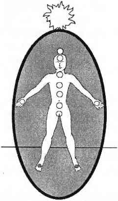

AYAK ÇAKRALARI
Ayak çakrası, ayak tabanının tam ortasındadır. Ayak çakralarınız da tıpkı el çakralarınız gibi duruma göre içe alıcı, kabul edici ya da dışa yansıtıcı, etki edici olurlar. Topraklama ve egzersiz sırasında ayak çakralarınız bedeninizden aşağıya toprağa enerji yönlendirmenize yardımcı olur. Yürüyüş meditasyonları ya da doğa gezileri sırasında ayak çakralarınız açılarak yeryüzünün enerjisinin bedeninize girip bedeninizi temizlemesini sağlar.

Eğer ayaklarınızdan birisini ya da ikisini birden kaybettiyseniz bu bilgiler sizin için gene de geçerlidir. Fiziksel ayağınız gitmiş olabilir ama enerji bedeninizde hala bacaklar, ayaklar ve ayak çakraları vardır.
Ayak çakralarınızın sağlığı sadece bedeninizde olup topraklanmış olma yeteneğinize değil aynı zamanda şimdiki zamanda, bu gezegende topraklanmış bir ruh olarak yaşama yeteneğinize de bağlıdır. Bu önemli bir farktır. Kafanızın içinde olmanız ve birinci çakranızdan topraklanmış olmanıza karşın yeryüzüyle bağlantılı olmayabilirsiniz, bu kesinlikle mümkün olabilecek bir durumdur; özellikle üçüncü, dördüncü ve beşinci çakralarınız birbirleriyle iletişim halinde değilse.
Şayet hayati önemi olan beden ruh iletişimi, üçüncü, dördüncü ya da beşinci çakralarınızda bloke olursa ruh ve beden temiz bir bağlantı kuramaz. Beden/ruh anlaşmasının işareti olan topraklama yetenekleri elle tutulur bir gerçek olmaktan çıkarak daha ziyade bir ideal olarak kalır. Ayak çakralarınıza ve birinci çakra ile olan bağlantılarına bakarak topraklamanızın olması gerektiği kadar güçlü olup olmadığını görebilirsiniz.
Ayak çakraları el çakraları gibi ihtiyaca göre açılıp kapanırlar. Onlar da ana çakralardan daha küçüktürler, açık oldukları zaman çapları 6 ila 7 santimetredir. Ayak çakralarının kendilerine özgü bir rengi yoktur. Genellikle toprak enerjisinin rengi olan kahverengi ya da birinci çakra enerjisine bağlıysalar kırmızı renktedirler.
Kişinin topraklanması ve beden bağlantısı güçlüyse birinci çakra enerjisi bacaklardan geçerek (genellikle kemiğin içinden) ayak çakralarından dışarı akar. Bu akışın anlamı, birinci çakranın sağlıklı olduğudur ve topraklama işlevini kavramsal olarak değil gerçekte yapmakta olduğudur. Kalp çakrasının enerjisi ellerden aktığı zaman, kendini sevmekle, başkalarını sevmekle ve şifa vermekle ilgili somut örnekler görürsünüz. Birinci çakranın enerjisi ayak çakralarından aktığı zamansa, topraklanmayla, doğaya ait olmayla ve ruh/beden iletişimiyle ilgili somut örnekler görürsünüz.
Sağlıklı ayak çakraları, yeryüzünün içinde varolan, bilgelik ve sükunetle dolu enerjiyle bağlantıyı sağlar. Ayak çakralarınız toprak enerjisini bedeninize çekerek doğa ile bütünleşmenizi sağlar. Bu enerji sizi temizleyecek, odaklayacak ve topraklayacaktır. Ayak çakralarınız aynı zamanda yorgunluk, stres ya da huzursuzluk enerjilerini toprağa bırakarak bunlardan kurtulmanıza da yardım eder.
Ayak çakralarınız sağlıklıysa alt beden hareketlerinizin hepsi topraklayıcıdır. Yürümek, dans etmek, paten yapmak ve alışveriş arabası itmek gibi eylemler eğer ayak çakralarınız yeryüzüyle sürekli alışveriş halindeyse topraklama çalışmalarına dönüşür.
KAPALI YA DA AÇIK AYAK ÇAKRALARI
Sağlıksız bir sistemde çok açık ayak çakraları acil bir topraklama aracıdır. Eğer dengenizi kaybettiyseniz ve topraklanmamış durumdaysanız ayak çakralarınız ardına kadar açılarak sizi yeryüzü enerjisine bağlı tutmaya çalışır, kendinizi şanslı addetmelisiniz. Derhal çakralarınızı hizaya sokup tedavi edin; ayrıca ayak çakralarınıza doğru işi yaptığı için teşekkür etmeyi sakın unutmayın. Siz yardım etmeseniz bile eğer ayak çakralarınız sizi topraklıyorsa evrimleşmiş ve sorumlu bir bedeniniz var demektir. Ona sevgiyle, şefkatle davranın. Evrimleşmiş bedenler günümüzün karmaşık ve gürültülü toplumunda zor zamanlar geçiriyorlar, özellikle de sahipleri onlara aldırmadığında!
Çok açık ayak çakraları için bütünlüklü çakra tedavisi uyguluyorsanız üçüncü, dördüncü ve beşinci çakralarınız arasındaki iletişime özel bir özen göstermelisiniz. Bu çakraların beden/ruh anlaşmaları ya da tartışmaları genellikle her türlü tıkanıklığı hafifletici rol oynar. Birinci çakranıza geldiğinizde, yakut kırmızısı enerjisinin bacak kemiklerinizin ortalarından itibaren ayak çakralarınıza aktığını görün. Bu bağlantı ayak çakralarınızın rahatlamasına ve normal boyutuna dönmesine şüphesiz yardımcı olacaktır.
Bütünlüklü çakra tedavisi sonunda çakralar için altın güneş tedavisine de zaman ayırın. Kalçanızdan başlattığınız altın enerjinin, bacaklarınızın üst yanından, dizlere, baldırlara, bileklere ve ayaklara akmasını sağlayın. Bu bölgeler bir süre özel ilgi isteyebilir. Birinci çakranızdaki ve ayak çakralarınızdaki enerji akışı daha kolaylaşana kadar günde bir kez altın güneş yöntemini uygulamanızı öneririm.
Sağlıksız ve çok açık ayak çakraları, takılıp tökezlemek, sürekli sağa sola ayak parmaklarını çarpmak ya da ayak ve diz burkulmalarına meyilli olmak gibi fiziksel sorunlar yaratabilir. Bir kez sağlıklı enerji akışı sağlandığında ve ayak çakraları bilinçli farkındalığa bağlandığında bu zorluklar azalıp yok olacaktır.
Sağlıklı bir çakra sistemindeki çok açık ayak çakraları bedenin iyileştirici ve bilge toprak enerjisine kendisini yeniden uyarladığının işaretidir. Çoğu kişinin gerçek rehberliğin sadece yukarıdan -kozmik, spiritüel alemden- geldiğine inanmasına karşın gerçek bilgelik toprak enerjisinin dengesinden ve kozmik enerjiden gelir. Kozmik enerji iyi dengelenmiş bir ruh yaratır ve toprak enerjisi bu ruhun yaşayabileceği iyi dengelenmiş bir beden yaratır. Bu karmaşık zamanlarda fiziksel denge hayatidir. Sağlıklı bir çakra sistemindeki çok açık ayak çakraları gezegenin ritmine, döngülerine ve enerjilerine uyabilmek için bilgelik ve rehberlik almaktadır. Bu bilgi ana çakralara iyileşme konusunda yeni bir bakış sağlar.
Çok açık bir çakranın en fazla bir hafta içinde kapanmasını istememize karşın ayak çakraları ve toprak enerjisi iyileşme bağlantısını kurmak için bundan daha fazlasına ihtiyaç duyabilir. Dünya, döngüler, mevsimler ve gerçek zamanda varolduğundan bedeninize belirli bir ders vermek ya da iyileşme şekli göstermek için daha fazla gerçek zamana gereksinim duyabilir. Bırakın ne istiyorsa yapsın.
Ayak çakralarınız yeryüzü şifasına katılırken siz de merkez çakralarınızın sağlıklı kalmasını sağlayın; onları desteklemek için düzenli olarak meditasyon yapın. Meditasyonunuzu her gün aynı saatte ve aynı yerde yapın. Toprak enerjisi zamana, mekana ve istikrarlı olmaya karşı çok hassastır. Kendinizi düzenli olarak odakladığınızda toprak enerjisi kendisini bu düzene uyduracak ve düşündüğünüz sürece size yeni bilgiler sunacaktır. Dinleyin ve öğrenin. Toprak enerjisi sonsuz iyileştirici ve sonsuz bilgedir.
Sağlıksız bir sistemdeki kapalı ayak çakraları dünya ile bağlantı kurmaya isteksizliğin ya da birinci çakradaki tahribata tepki gösteren ayak çakralarının sonucudur. Ayak çakraları, beden enerji akışının sağlanması için yeterince ve yavaş bir şekilde günlük egzersiz yapılmadığında da kapanırlar. Yeterince ve yavaş diye belirttim çünkü nice egzersiz bağımlısının ayak çakraları kapalıdır; ayak, bacak ve alt beden kazalarına meyillidirler.
Zorlayıcı egzersiz, topraklamanın tamamen aleyhine işler çünkü bedenin yolladığı acı, açlık, yorgunluk gibi normal sinyalleri görmezden gelir. Eğer acı yoksa kazanç da yok tarzı maço egzersiz delisiyseniz kendinize gelin. Egzersizi tamamen bırakmanıza gerek yoktur ama bedeninizi zorlamak yerine bedeninizi dinleyerek egzersiz yapmayı öğrenin. Bedeninizle ve ayak çakralarınızla iletişime geçmenin büyük yardımı olacaktır.
Kapalı ayak çakraları, ayakları ve bacakları gererek esnekliklerini yitirmelerine; büyük olasılıkla da mafsal iltihaplanmalarına neden olur. Ayaklarda ve bacaklarda, yeterli enerji akışı olmadığı için damar bozuklukları görülebilir. Beden enerji yoksunluğuna tepki vermek için kimi zaman ayaklarda büyük sıcaklık değişiklikleri yaratır.
Kendimizi kandırmayalım. Biz bedenlerde yaşayan ruhlarız ve bedenlenmemizin tek amacı fiziksel dünyada, bedenlerimizin içinde yaşayıp iletişim kurmayı öğrenmektir. Astral yolculuk, yüksek rehberlik, ruhlarla iletişim ve diğerleri iyidir hoştur da topraklanma olmadan bu aktivitelere dalmak beden/ruh ayrılmasına yol açar.
Diğer tüm sağlıklı çakralarınız gibi ayak çakraları da kapanarak tatile çıkabilir. Bunun bir tatile çıkış olup olmadığını anlamak için ikinci ve birinci çakralarınızın sağlık durumuna bakın. Aynı zamanda kalçanız, bacaklarınız ve ayaklarınız ayak çakralarınız kapalı olmasına karşın gevşek, rahat ve canlı olacaktır.
Ayak çakraları genellikle bir iki günden fazla kapalı durmaz. Bu zaman zarfında topraklama ve yeryüzü bağlantısı bilgileri işleme konur. Eğer iki günden daha fazla kapalı kalırlarsa yoklukları topraklamada dengesizlikler yaratabilir. Ayak çakralarınız tatildeyken gözlerinizi üzerlerinden ayırmayın ve onlara nöbetçi çoraplar giydirin.
Eğer ayak çakralarınız iki gün geçtiği halde hala kapalıysa o zaman komple bir çakra yorumlaması yapın. Birinci çakranızdan ayak çakralarına giden enerji akışını aşağıda anlatılan yöntemi kullanarak yeniden sağlayın. Ayak çakralarınıza yeniden açılmak için hangi enerjinin ya da gerçek yaşam desteğinin gereksinimini duyduklarını sorun. Genellikle günlük bacak hareketleri yapmaya, yürümeye ya da bisiklete binmeye söz vermenizi isterler. Yapın.
AYAK ÇAKRALARINI BİRİNCİ ÇAKRAYA BAĞLAMAK
Doğal olarak topraklanmış kişilerde ayak çakraları yardım gerektirmeden kendilerini yeryüzünün iyileştirici enerjisine bağlarlar. Ruh/beden ayrılığı yaşayan kişilerde ise ayak çakraları genellikle yeryüzü enerjisi ile bağlantıyı koparmışlardır. Bunun sonucunda topraklanma ve yaşam çok zorlaşır.
Birinci çakra enerjisi bacaklardan ayak çakralarına yönlendirildiğinde bacakların kendisi birer topraklama aracına dönüşür. Birinci çakrayı ayak çakralarını bağlamak yürümeyi ve egzersiz yapmayı meditatif bir işlem haline getirir. Bacakların her hareket edişinde, ayakların her yere basışında yeryüzüyle bağlantı yenilenir. Ayak çakralarınız sağlıklı ve bağlantılı ise bedeninizin basit hareketleri bile topraklanma sağlar.
Odaklandığınızda ve kafanızın içindeyken birinci çakranızı sağlıklı, yuvarlak, yakut kırmızısı bir enerji merkezi olarak düşünün. Onunla topraklama kordonu arasındaki güçlü bağı görün. Şimdi çakraları ayak tabanlarınızın her birinde açık ve yuvarlak olarak hayal edin.
Kafanızın içinden kırmızı birinci çakra enerjinizin her iki bacağınızdan aşağı doğru indiğini hayal edin. Hala yuvarlak olan birinci çakranızdan aşağıya doğru bacak kemiklerinden yakut kırmızısı enerjinin aktığını görün. Birinci çakranızın tümünü akıtmadığınızı ama sonsuz enerjisinin bir kısmını yönlendirdiğinizi bilin.
Odaklanmış durumda kafanızın içindeki odada kalın, kırmızı enerjinin ayak bileklerinizden ve sonra ayak tabanlarınızdan çıktığını görün. Enerjinin bacaklarınızdan yeryüzüne aktığını hissedin.
Eğer yeryüzüne bağlanma duygusu size garip geliyorsa ya da bacaklarınızı sıcak ve ağır hissediyorsanız demek ki ayak çakralarınız kullanıma açık değildi. Eğer sadece hafif değişiklikler hissediyorsanız, bu ayak çakralarınızın kendi başlarına çalıştıkları anlamına gelir. Şimdi topraklama kordonunuzu ayak çakralarınıza ekleyin ve işte bitirdiniz!
Eğer bu bağlantıyı sağlamakta çok zorlanıyorsanız kalp çakrası bağlantılı ellerinizi kullanarak birinci çakra enerjisinin bacaklarınızdan inmesine yardımcı olun. Her iki ayağınıza geldiğinizde ayaklarınızın üzerinde daireler düşünün ve sanki enerjiyi kaşıkla karıştırıyormuş gibi hissedin. Böylece onları uyandırır ve işe koşarsınız.
Birinci çakra enerjinizi ayaklarınıza götürmek için ellerinizi birkaç kez kullanabilirsiniz. Bu başlangıçta normaldir ama daha sonra birinci çakradan ayaklara bağlantı kendi başına olacaktır.
Birinci çakranız ve ayak çakralarınız arasındaki bağlantının sürekli farkında olun, özellikle de geçmişte topraklanma sorunları yaşadıysanız. Bu noktadan itibaren bu bağlantıyı her çakra kontrolünde, çakra yorumlamada ya da altın güneş tedavisi uyguladığınızda kontrol edin.
Çoğu öğrenci birinci çakradan ayak çakralarına olan bağlantının birinci çakra topraklama kordonu yerine kullanılabileceğini keşfeder. Eğer bu şekilde topraklanmanız daha kolay oluyorsa o zaman birinci çakra topraklama kordonunu atın ve onun yerine ayaklarınızdan topraklanmaktan çekinmeyin. Üstelik bu bir kez birinci çakranızı temizledikten ve canlandırdıktan sonra topraklanmanın daha doğal bir yoludur.
SAĞLIKLI AYAK ÇAKRALARININ ÖZELLİKLERİ
Ayak çakralarınız sağlıklı olduğunda, topraklanmak çok olağan bir hale gelir. Sizi yeryüzünün bilgisine, enerjisine ve şifasına bağlarlar; bedenin kendisini daha gerçek hissetmesini sağlarlar. Kendine saygı, yeterli egzersiz, düzgün beslenme, huzurlu çalışma ve hayat koşulları, akılcı sağlık hep gezegen ile kapalı ve iyileştirici bir bağın dıştan görünen işaretleridir.
Sağlıklı ayak çakraları, sahiplerine, odaklanmış, sağlam, topraklanmış ama derin bir biçimde spiritüel enerji sunarlar; tıpkı doğaya odaklanmış kabile insanlarının enerjisi gibi. Beden, yeryüzüyle gökyüzü arasındaki saygın hakemlik konumunu alınca, gezegenin üzerindeki her hareket yaratıcı gücün hareketinin bir parçası olur ve yaratıcı gücün her hareketi gezegenin üzerindeki hareketin bir parçası olur. Sağlıklı ayak çakralarının sağladığı gezegen bağlantısı bu iç içe geçişi mümkün kılar.
Kimi zaman sağlıklı ayak çakraları sanki yerçekimi sizi herkesten daha çok etkiliyormuşçasma bedeninizi ağırlaştırabilir. Bu, sağlıklı ayak çakraları olan kişiler ruh/beden bölünmesine doğru ilerlediklerinde ortaya çıkar. Ayaklardaki ağırlık, kozmik odaklı spiritüel bilgiye verilen fazladan önemle doğru orantılıdır. Bacaklarınız ve kalçanız aşağıya doğru çekildiğinde bunun anlamı fazla topraklanmanız değildir. Anlamı ruh/beden bölünmesine doğru gittiğiniz ve az topraklandığınızda. Bu duyguya dikkat edin ve ayaklarınızı tekrar birinci çakranıza bağlayın. Sizin yardımınızla bedeniniz ve ruhunuz birbiriyle kolayca iletişim kuracaktır.